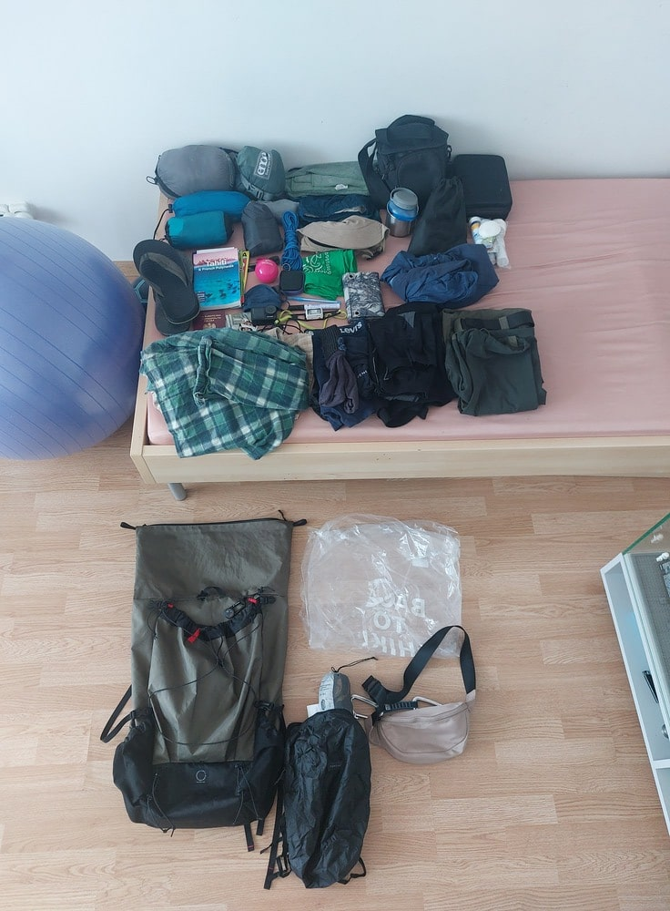

Polynesia
I was a young teenager when Facebook recommended me a travel profile called "Boczne Szlaki". It was run by a guy who was hitchhiking around the world and had traveled all over South and Central America. I had been fascinated by travel since childhood, but at that time, I never would have thought I could go anywhere beyond Europe. It was this profile that made me believe in myself and realize that fulfilling dreams of visiting the most remote corners of the Earth is real and achievable - and that even I could do it.
Boczne szlakiAt that time, the author was in Polynesia, where he stayed for several months, posting vlogs about his experience. From the very first moment, I fell in love with this place. The stunning, uninhabited atolls, towering jungle-covered volcanoes, incredibly kind people, and the simplicity of life completely captivated my mind. To me, it was paradise on Earth and my ultimate travel goal. Living there became the pinnacle of my dreams. From that moment on, Polynesia took over my thoughts.
I never would have expected that I'd fulfill my biggest travel dream in just the third year of my wandering around the world. I wasn't planning it, thinking that, it was too expensive and too ambitious. For the summer of 2024, my main plan was some form of sailing adventure - I had long wanted to experience life at sea (which is also high on my dream list). It was supposed to be a solo trip since I felt that was the last thing I needed to truly call myself a proper traveler. At first, I considered joining a cargo ship, but that idea quickly fell through. After a few weeks of thinking, I remembered Workaway, a platform listing places where you can exchange help and work for accommodation and food. I started searching for boat-related opportunities. After a few days of research, I found several offers, but most were for boats docked in harbors. And then, finally - one single listing in Polynesia. No major requirements. A guy had a boat and one available spot, so he was looking for someone to sail with him. I reached out, but it was too early for a confirmation. He told me to contact him three months before my arrival. I wasn't going to wait - I bought my tickets immediately. It turned out that flights from Paris were half the price compared to those from Poland. The uncertainty of whether I'd get a spot on the boat didn't change anything. Even if it didn't work out, I'd still be in Polynesia - I'd figure something out. It was hard to believe - my biggest dream had just come true. I was flying to Polynesia.
As the departure date approached, my preparations entered more advanced stages. The trip was planned for three weeks: two in Polynesia, a one-day layover in San Francisco, and four days in France on the way back. I drafted a Plan B in case the boat option fell through, and it turned out so well that I even started considering skipping the Workaway offer. My doubts aligned perfectly with the news that my potential host wouldn't be able to take me in. So, Plan B it was. I scoured maps for the most isolated island with an airport, read about different archipelagos, and checked flight connections. Eventually, I made my choice: one week on Ahe Atoll in the Tuamotu Archipelago, followed by a week on Tahiti. My vision was simple: a hammock, a beach, and pure spontaneity. I had no idea what was waiting for me, but I didn't care - because I was going there for my dreams.
 My equipment
Like most journeys, this one had to start at an airport. My mom drove me there, gave me a hug, and waved as I walked into the glass-fronted terminal of Kraków Balice. The first flight to Paris passed quickly. Once there, the city was still buzzing - it had only been a few weeks since the Olympics ended, and the whole place was still vibrating with energy. I had to transfer to Paris Orly Airport, so I rushed to the metro. Once there, I grabbed a quick lunch and replied to messages from friends and family. This was my first solo trip - and such a distant one - so naturally, everyone was a bit stressed. While waiting in line to board, I noticed a few Polynesian-looking passengers, and that's when it truly hit me - how close I was. The flight lasted 10 hours before we landed in San Francisco for a refueling stop. Unfortunately, we still had to go out of the plane and go through a whole set of procedures. To make things worse, I started feeling feverish. Before the trip, practically everyone around me had been sick, and it was a miracle I hadn't caught anything earlier. I popped a few pills and after a while, the fever started to ease. The second flight - another 10 hours (making it 22 hours total since I left Paris) - was spent watching Moana and catching up on sleep. Finally, at 6 AM local time, I landed in the most beautiful country I had ever seen.
Flights